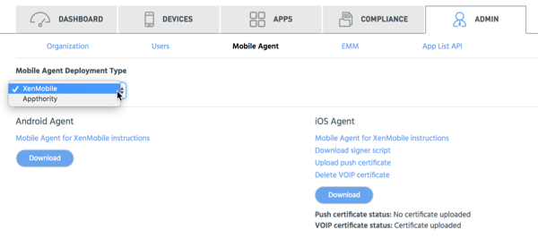

Select Citrix for Mobile Agent Deployment Type if you use Citrix EMM.
Note: You can also deploy Mobile Agent without EMM integration. To use this option, select Appthority.
Access this option from Admin > Mobile Agent once you have configured your organization.
Note: The Download button will not be available until you have completed onboarding.

See XenMobile: Deploy Mobile Agent for instructions on how to set up Mobile Agent in XenMobile.